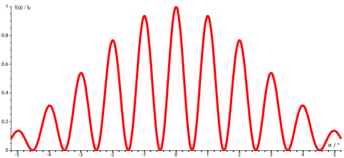
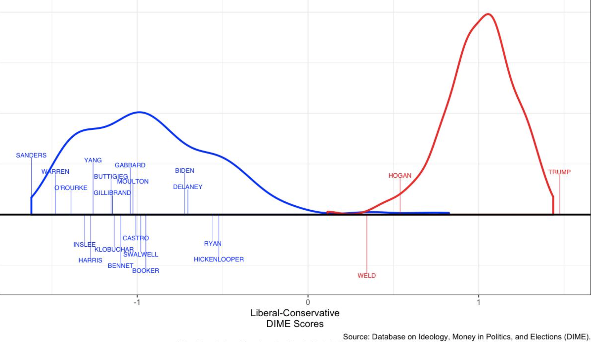
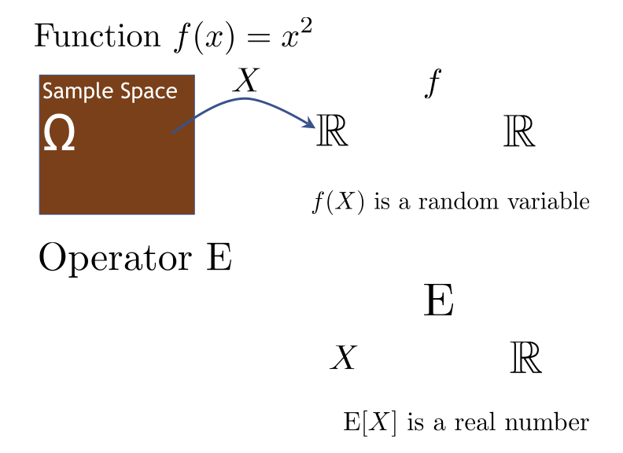

Week 3
Summarizing Distributions
The Importance of Summarizing Distributions
Examples of Distributions
The location of photons in a physics experiment

The liberal or conservative lean of members of congress

- All of these examples only use one random variable, and their distributions have very different shapes.
- To represent all of these, we need a flexible mathematical object. We can change a distribution in an infinite number of ways. Move it up a bit in one place, move it down in another. That’s what we need to represent the rich variety of phenomena that we want to model.
- But there’s a downside to all this flexibility…
The Downside of Flexibility
Highly flexible objects present obstacles:
- Cannot specify density for every value: We can’t select a density for every possible point - that’s an infinite number of choices. And how could I ever communicate those choices to you?
- Cannot communicate or reason about every value: Even if I could somehow transmit that information to you, what could you do with it? You can’t really compare each point of one density against another.
- Cannot estimate density at every value given data: With finite data, you can’t estimate density at every point.
Why not restrict to distributions in a parametric family?
- The real world isn’t that neat!
- “Agnostic” approach: minimal assumptions on the model.
Why Summarize?
Summary tools are the hooks we use to estimate, reason about, and communicate about random variables.
Foundational Summary Tools
One Random Variable
- Expectation: Represents the center of a distribution.
- Variance: Represents the dispersion of a distribution.
Two Random Variables
Covariance: A generalization of variance.
Correlation: An intuitive measure of linear association.
In this unit, we’re going to cover a few of the most foundational summary tools out there.
We’ll start with a single random variable.
Expectation, as we’ll see, is like a mean, but a version of the mean for random variables. Variance is about how spread out a distribution is.
Then we’ll move on to pairs of random variables - how do we summarize relationships?
Covariance and correlation are tools that capture the strength of a linear relationship in a single number.
At the end of this unit, you’ll be much better placed to study, and communicate about random variables.
Review of Operators and Functions
Review of Operators and Functions

- As you start reading about expectation, it’s good to be reminded that expectation is an example of an operator. Actually, all the summary tools we’re going to cover are operators, so let’s quickly review what that word means. What’s the difference between a function and an operator?
- When we say a function of a random variable, we mean a function from \(\mathbb{R}\) to \(\mathbb{R}\).
- A function takes the output of a random variable as input and maps it to a new real number.
- Putting a random variable into a function gives you another random variable.
- Expectation is an operator, which means it takes an entire random variable as input.
- So, for example, \(\mathbb{E}[X]\) is a real number.